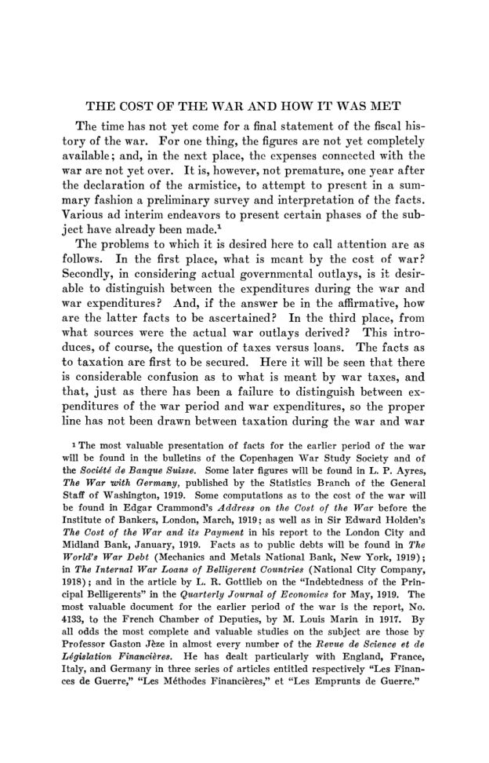

Seligman e a conta da Primeira Guerra
Leitura: 9 min
Edwin R. A. Seligman calcula o custo monetário da Primeira Guerra para os beligerantes e mostra que a parcela paga com impostos de guerra foi bem menor do que diziam os governos.


Em dezembro de 1918, os Estados Unidos gastavam com a guerra, em média, US$ 64,5 milhões por dia, quase o dobro do que gastava a Grã-Bretanha. No segundo mês de participação americana, o número era de US$ 15 milhões; pouco mais de um ano depois, de quase US$ 50 milhões. Os números estão numa das tabelas de “The Cost of the War and How It Was Met”, de Edwin R. A. Seligman, da Columbia University, na American Economic Review de dezembro de 1919.
Seligman escreve um ano depois do armistício e avisa que ainda não é hora de uma história fiscal definitiva: os números não estão completos, e as despesas da guerra não terminaram. Propõe um levantamento preliminar, com dados oficiais de cada país, em torno de cinco perguntas: o que é o custo da guerra, como separar gastos de guerra dos demais, de onde veio o dinheiro, que impostos foram usados e que papel tiveram os empréstimos longos e curtos.
O que é o custo de uma guerra?
No sentido amplo, o custo inclui vidas e bens destruídos e a redução da produção social: perda de território, como na Alemanha e na Áustria, dano a recursos naturais, como as minas e florestas da França, perda de força de trabalho e de eficiência. Seligman reconhece a importância dessas perdas, mas as considera em grande parte incalculáveis, e trata só do custo monetário direto: despesas militares e navais, a produção industrial para supri-las e o sustento das famílias dos soldados.
Mesmo esse custo é difícil de fixar. Não se sabe onde parar: no armistício, na ratificação da paz ou depois da desmobilização, da reconstrução e das pensões. Os empréstimos dos países ricos aos pobres são às vezes contados duas vezes. Nos Estados Unidos, o seguro dos soldados, que substituiu as pensões, faz a despesa parecer menor. E nada corrige a alta de preços, que em alguns países dobrou ou mais que triplicou o nível anterior. As moedas são convertidas pela paridade metálica de antes da guerra, o que, admite o autor, exagera os valores dos países de moeda depreciada.
Gastos na guerra ou gastos da guerra?
A distinção central do artigo é entre o que se gastou durante a guerra e o que se gastou por causa dela. Para chegar ao segundo número, Seligman desconta de cada ano de guerra a despesa do último ano de paz, sabendo que isso exagera um pouco o custo, porque a despesa de paz também cresceria. Assim, a despesa diária de guerra da Grã-Bretanha passa de cerca de US$ 9,5 milhões nos primeiros oito meses para US$ 33,4 milhões em 1918; a da Alemanha, de US$ 13,3 milhões para US$ 34,5 milhões.
O autor também refaz as contas oficiais americanas. Os relatórios do Tesouro e as cartas dos secretários McAdoo e Glass trazem números que não batem entre si, em parte porque as receitas e despesas postais ora entram, ora não entram nas contas. Nenhum deles, observa, calcula o que realmente importa: a proporção dos gastos de guerra coberta por impostos de guerra.
Quanto veio dos impostos?
“Devemos comparar não as despesas totais com os impostos totais, mas gastos de guerra com impostos de guerra.” (“We must not compare the total expenditures ... with the total taxes ... but war expenditures with war taxes”)
Na Grã-Bretanha, a conta usual dos ministros dava 24,9% do gasto total coberto por tributos. Pelo critério de Seligman, impostos de guerra cobriram 7,3% dos gastos de guerra no primeiro ano, 26% no último e 17,1% no período, pouco mais de um sexto. Excluída metade dos empréstimos aos aliados, como fazia o ministro Chamberlain, a proporção sobe para pouco mais de 21%. Ainda assim, foi o bastante para manter o crédito britânico.
Os demais foram pior. A França, invadida na região mais rica, arrecadou nos três primeiros anos menos do que antes da guerra; seus impostos de guerra apenas cobriram o déficit do orçamento de paz, e Seligman atribui parte disso à timidez do governo em tributar. A Itália cobriu com eles os juros dos empréstimos. A Alemanha, que contava com vitória rápida e indenizações, preferiu empréstimos e só a partir de 1916 passou a tributar mais.
Nos Estados Unidos, a proporção foi de 30% no primeiro trimestre, 24,8% em 1917–18 e 21,7% em 1918–19, ou 23,3% no período; sem os empréstimos aos aliados, 32,5%. Dois fatos chamam a atenção do autor: a parcela caiu à medida que a guerra avançou, porque o gasto cresceu mais depressa que a receita; e ficou longe do programa de meio a meio sugerido por McAdoo e adotado por Wilson, sem falar no financiamento integral por impostos pedido no memorando de Minnesota, que Seligman considera tão extremo quanto o financiamento só por dívida.
Que impostos foram usados?
No continente, os impostos indiretos pesaram tanto quanto os diretos. A França planejou obter cerca de 60% da nova receita com tributos indiretos, mas o imposto sobre lucros de guerra rendeu 907 milhões de francos, ante 540 previstos, e o imposto sobre vendas, 210 milhões, ante 800, e a proporção se inverteu. Na Itália, em 1918, os novos impostos diretos renderam 2,06 bilhões de liras e os indiretos, 2,01 bilhões. Na Alemanha, o governo imperial apoiou-se em fumo, carvão, transporte e vendas, deixando renda e patrimônio aos estados.
Grã-Bretanha e Estados Unidos seguiram outro caminho. O imposto britânico sobre lucros extraordinários subiu de 50% para 60% e depois 80%, e o imposto de renda chegou a levar mais da metade das rendas altas; no último ano de guerra, mais de três quartos da receita tributária vieram de impostos diretos. Nos Estados Unidos, a alíquota máxima do imposto de renda chegou a 77%, e os impostos sobre a riqueza deram 79,1% da receita interna em 1918 e, ajustados os pagamentos parcelados, 80,6% em 1919.
Como se tomou emprestado?
A Grã-Bretanha começou com letras do Tesouro e passou a empréstimos de guerra a partir de março de 1915; ao fim de 1918, quase 4 bilhões de libras, mais da metade da nova dívida, estavam em títulos internos de prazo relativamente longo. A França dependeu de adiantamentos do Banco da França, de bônus de defesa nacional e de empréstimos externos; seu primeiro empréstimo de guerra, de novembro de 1915, rendia 5% e saiu a 87,25. Os empréstimos internos responderam por cerca de 40% de sua dívida de guerra.
A Alemanha apostou desde o início em títulos longos, com nove empréstimos de guerra: no fim de 1918, 98 dos 153 bilhões de marcos da dívida de guerra, cerca de 64%, estavam nessa forma, a melhor proporção entre os beligerantes. Nos Estados Unidos, depois de certificados provisórios, o Tesouro recorreu ao público com os Liberty Loans, e quase toda a dívida de guerra ficou em títulos internos longos e fáceis de administrar.
Quanto ficou de dívida?
Somadas as tabelas, a dívida pública dos beligerantes passou de quase US$ 28 bilhões antes da guerra para mais de US$ 224 bilhões depois dela, uma dívida de guerra de cerca de US$ 196 bilhões. Nos Estados Unidos, a dívida líquida subiu de US$ 1,19 bilhão em abril de 1917 para US$ 24,2 bilhões em junho de 1919. A maior era a alemã: segundo o ministro Erzberger, 204 bilhões de marcos em outubro de 1919, embora a depreciação do marco reduza muito o equivalente em dólares.
Comparando dívida e custo, Seligman conclui que quase todo o gasto foi coberto por empréstimos. A diferença, de uns US$ 15 bilhões obtidos com impostos, deve-se quase toda à Grã-Bretanha e aos Estados Unidos; o pouco que Itália e Alemanha arrecadaram foi compensado pelos déficits delas e da França.
“Continua verdade, portanto, que a guerra foi conduzida quase inteiramente a crédito.” (“It remains true, therefore, that the war was conducted almost entirely on credit.”)
O problema que fica, para vencedores e vencidos, é como obter recursos para os juros e a amortização de dívidas que, diz o autor, equivalem a uma parte nada desprezível da riqueza do mundo.
Na minha leitura
Na minha leitura, a contribuição de Seligman é de método. Ao trocar a razão usual, imposto total sobre gasto total, por imposto adicional sobre gasto adicional, ele mostra que a medida escolhida muda a conclusão: a Grã-Bretanha passa de quase um quarto para um sexto, e os Estados Unidos, de um terço para menos de um quarto. A mesma lógica de comparar incrementos com incrementos vale para qualquer avaliação de como um choque fiscal foi financiado.
O segundo ponto é a composição. Seligman não se limita a medir quanto veio de impostos e quanto de dívida; pergunta que impostos e que dívida. Impostos diretos sobre lucros e renda e títulos longos colocados no público interno deixaram Grã-Bretanha e Estados Unidos numa posição mais confortável para o pós-guerra do que impostos indiretos, dívida flutuante e adiantamentos do banco central. A forma do financiamento, e não só o seu tamanho, define o problema que fica para depois.
Glossário
- Gasto de guerra
- em Seligman, a despesa de cada ano de guerra menos a despesa do último ano de paz.
- Imposto de guerra
- a arrecadação de cada ano de guerra menos a arrecadação do último ano de paz.
- Paridade metálica
- taxa de câmbio entre moedas definida pelo conteúdo de ouro de cada uma antes da guerra.
- Dívida flutuante
- dívida de curto prazo, como letras do Tesouro e adiantamentos bancários, que precisa ser renovada com frequência.
- Liberty Loans
- empréstimos populares lançados pelo Tesouro americano para financiar a Primeira Guerra Mundial.
- Imposto sobre lucros extraordinários
- tributo sobre o lucro que excede um nível considerado normal, usado na guerra para alcançar ganhos ligados a ela.
- Desconto de emissão
- venda de um título abaixo do valor de face, que eleva o rendimento efetivo para o comprador.
Fontes
- The Cost of the War and How It Was Met — Edwin R. A. Seligman (Columbia University) (pp. 739–770). JSTOR · Internet Archive (PDF)
- Edição completa, com os demais artigos: Nº 161 do Arquivo.
Documento em domínio público (EUA, publicado antes de 1931), via JSTOR Early Journal Content e Internet Archive. Resumo e comentário do autor deste site, sem afiliação com a American Economic Association. Encontrou um erro? Escreva: a correção é publicada no próprio texto, com data.
← Dorothy Douglas e o salário mínimo que não chegava ao mínimo ↑ Nº 161 · Seguro estatal, salário mínimo e a conta da guerra